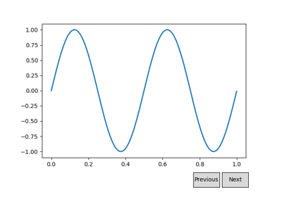
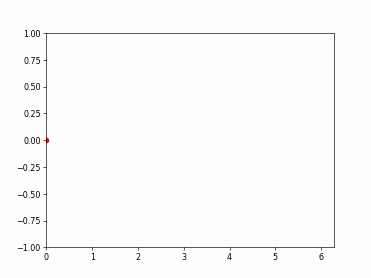
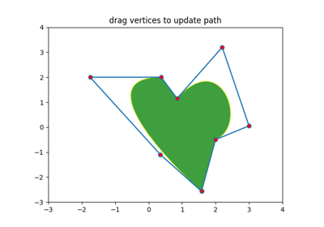
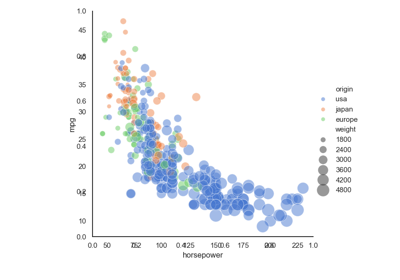

12.3. Python packages#
This chapter contains further python packages demos to show how itom is used as a general python IDE. Click on any image to see the full script documentation.
12.3.1. Matplotlib#

Buttons
Colorbar tick labelling
Cyberpunk



Function animation


Logarithmus



Path editor
Polar axis

Scatter 3D


Tex
Text fontdict

12.3.2. Numpy#
This demos shows the features of numpy (https://numpy.org/doc/stable/user/quickstart.html).


12.3.3. others#


12.3.4. Pandas#
This demos show the basics feature of pandas (copied from https://pandas.pydata.org/docs/user_guide/10min.html).


12.3.5. Parallelization and Threading#


12.3.6. Plotly#
12.3.7. PyTest#
Pytest
12.3.8. Scikit-learn#

Principal Component Regression vs Partial Least Squares Regression
Principal Component Regression vs Partial Least Squares Regression
Recursive feature elimination

12.3.9. Scipy#
12.3.10. Seaborn#

Joint kernel


Scatterplot